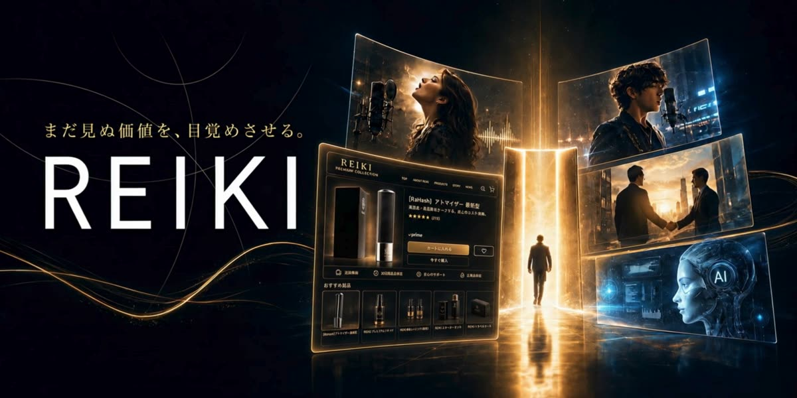
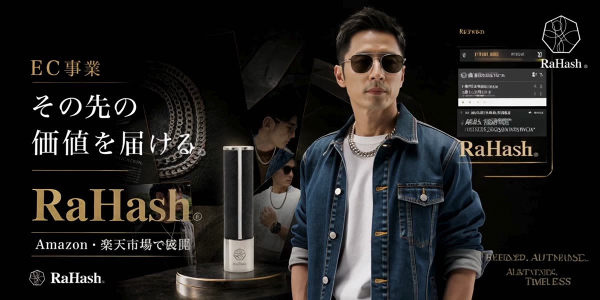
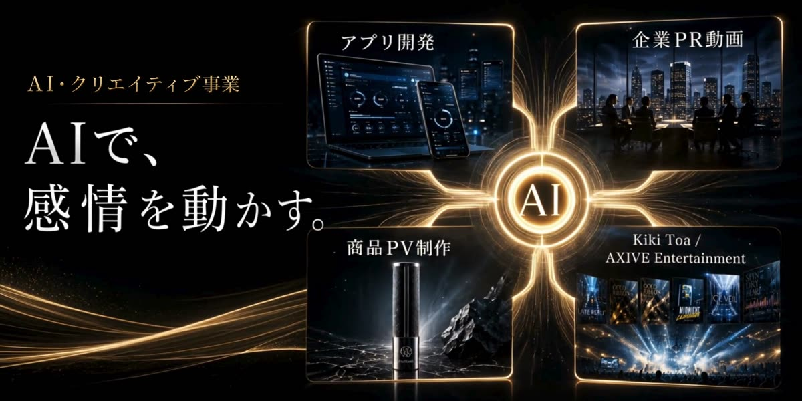
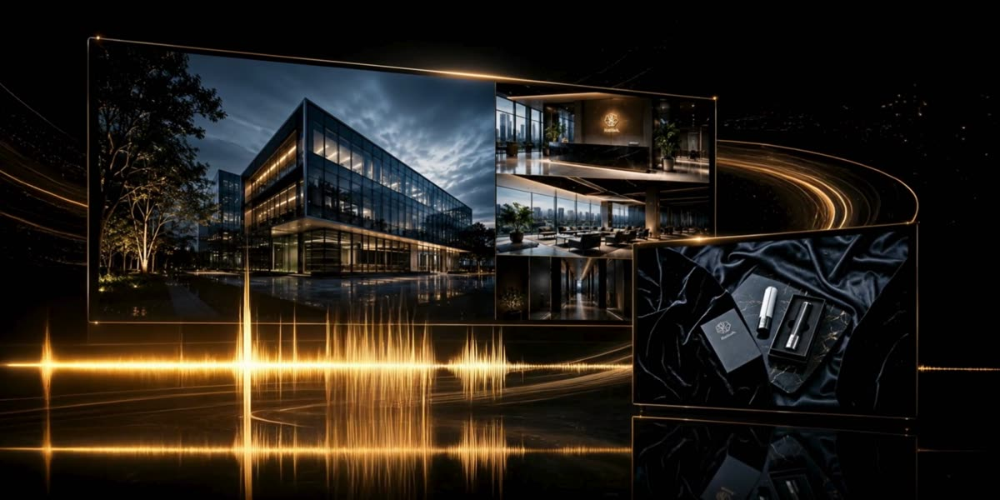
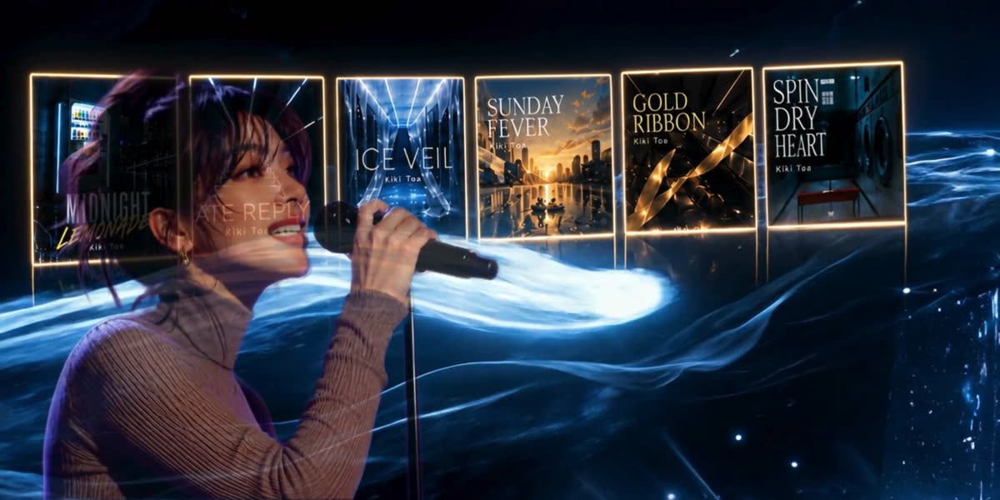
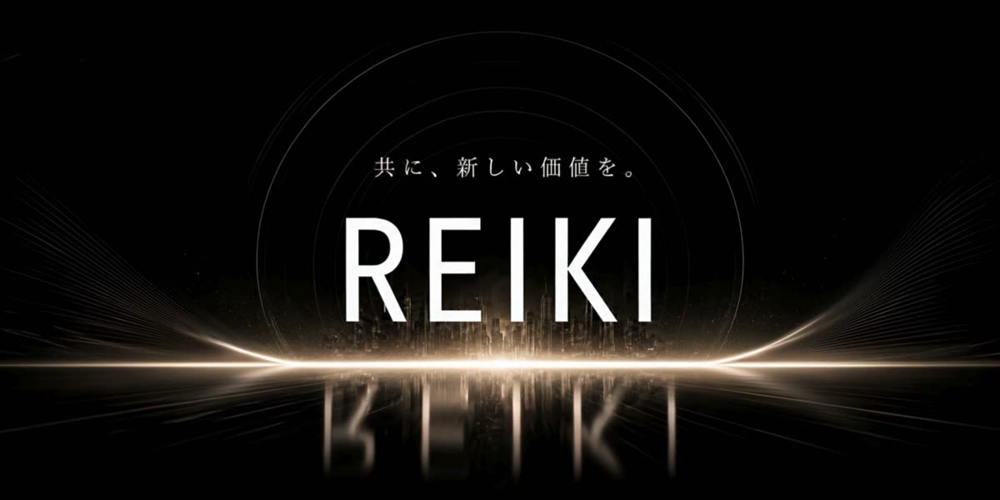

← ポートフォリオに戻る
求められたこと
会社の4つの事業を、ライブ会場に集まった人へ短い時間で伝える映像が必要でした。流すのは会場の横に長い大画面です。
場面の流れ

1. はじまり「まだ見ぬ価値を、目覚めさせる。」社名と、事業の世界へ扉が開く。

2. EC事業「その先の価値を届ける。」アクセサリーブランドと、Amazon・楽天での展開。

3. AI・クリエイティブ事業「AIで、感情を動かす。」アプリ開発、企業PR動画、商品PV、音楽レーベル。

4. 会社と商品オフィスと商品の世界観を、光の線と音の波でつなぐ。

5. 音楽レーベルAIで作った楽曲のジャケットと、歌う人の場面。

6. 締め「共に、新しい価値を。」
工夫したこと
- 会場の横に長い大画面に合わせて、3840×1920（横2：縦1）で制作しました。
- 事業ごとに一言の言葉（「その先の価値を届ける。」「AIで、感情を動かす。」）と場面を1対1でそろえ、遠くの客席からでも読み取れる大きさにしました。
- 画像と映像はAIで作り、黒と金の色調で全体をそろえて、会社の雰囲気を統一しました。
- 映像の中に出てくる商品PVや音楽レーベルの作品も、自分がAIで作ったものです。
結果
会社の公式YouTubeチャンネルで公開しています。